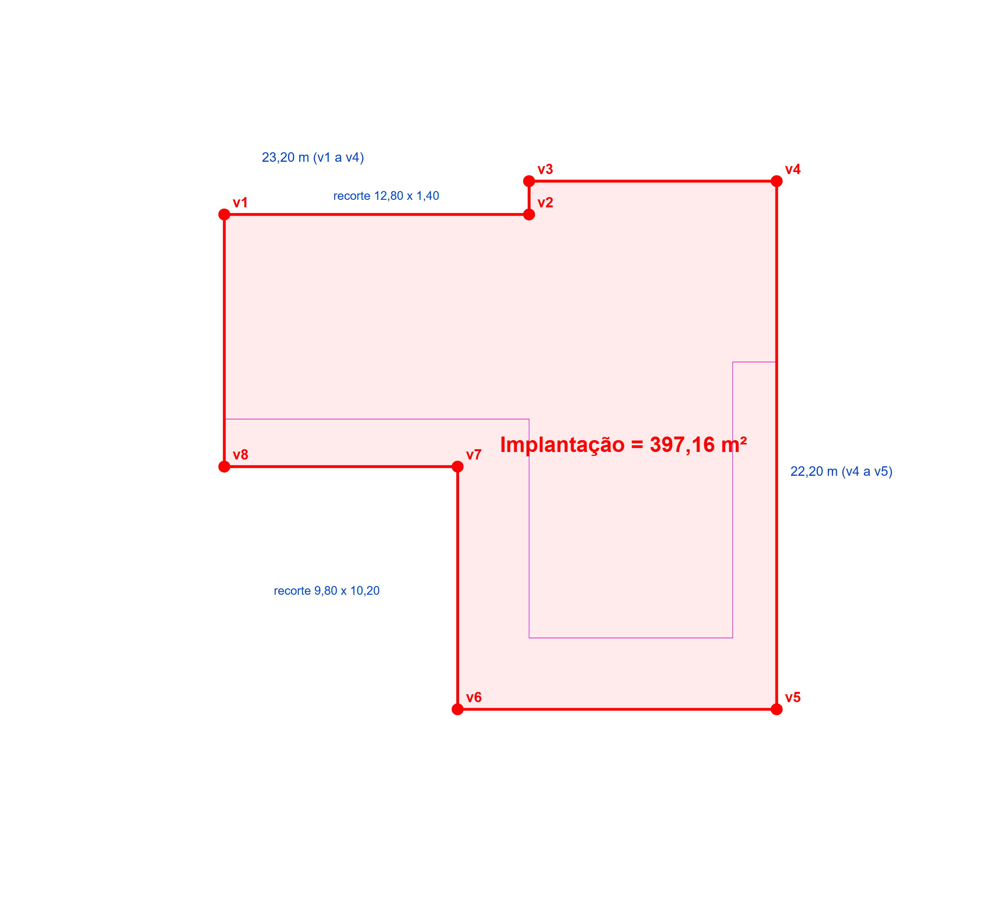

A semana de medição
passa a uma manhã de validação.
Uma plataforma feita à medida da Concroc que junta obras, orçamentação, medições, faturas de fornecedores e cotações num só sítio, ligada ao PHC. Construída em cima dos ficheiros reais que o Ricardo nos enviou.
Cinco coisas que o Ricardo nos disse
Uma semana por orçamento
A medição de quantidades de materiais e mão de obra leva perto de uma semana por obra. Cerca de 60% desse tempo está na estabilidade.
Dois monitores, um Excel
O projeto num ecrã, as tabelas no outro, e a informação transcrita à mão, elemento a elemento.
Faturas por email
90% das faturas de fornecedores chegam por email e entram no PHC à mão. Os mapas de controlo de obra ficam para trás.
Preços que envelhecem
A base de preços de materiais e fornecedores não acompanha as faturas reais. As cotações a subempreiteiros fazem-se à mão.
Ferramentas que não poupam
O Togal obrigava a selecionar todos os cantos e a dizer o que é cada parede. No fundo, era o vosso Excel com outra cara.
O objetivo
Nas palavras do Ricardo: "não queremos ver mais coisas, queremos perder menos tempo à volta dele".
O problema não é falta de trabalho. É o tempo que a informação demora a chegar ao sítio certo.
Os ficheiros que nos enviaram, já abertos e lidos
Tudo o que vem a seguir foi construído em cima destes ficheiros. Nada é genérico.
O vosso projeto de estabilidade, lido pela plataforma
Abrimos o ficheiro EST.5, extraímos os pórticos da folha de vigas e comparámos com o que o Ricardo escreveu à mão na folha Vigas do Excel.
O que a plataforma faz quando recebe o projeto.
| Pórtico (cobertura) | Projeto, soma dos vãos | Excel do Ricardo | Resultado |
|---|---|---|---|
| Pórtico 1 | 14,636 | 14,636 | igual |
| Pórtico 2 | 14,635 | 14,635 | igual |
| Pórtico 3 | 15,121 | 15,121 | igual |
| Pórtico 4 | 11,350 | 11,350 | igual |
| Pórtico 5 | 11,570 | 11,570 | igual |
| Pórtico 6 | 7,952 | 7,952 | igual |
| Pórtico 7 | 7,804 | 7,804 | igual |
| Pórtico 8 | 2,385 | 2,385 | igual |
| Pórtico 9 | 14,120 | 14,120 | igual |
| Pórtico 10 | 2,534 | 2,534 | igual |
| Pórtico 11 | 6,620 | 6,620 | igual |
| Piso 0, pórticos 8, 9 e 14 | soma dos vãos | valor mais baixo | confirmar |
Comprimentos em metros. Os outros 11 pórticos do piso 0 também batem. Nos 3 marcados, a plataforma aponta a diferença e o Ricardo decide.
A vossa planta, gerada a partir do DWG
Sem abrir nenhum programa de CAD. As divisões, as áreas, os vãos e as cotas são texto dentro do ficheiro. A geometria também está lá.


Onde somos frontais: duas coisas ainda não estão provadas
Preferimos dizer isto agora do que prometer o que não se cumpre. É o único ponto da proposta que entra com um teste antes do compromisso.
Áreas, vãos, cotas, legendas
Texto no ficheiro. Extração exata, sem inteligência artificial e sem margem de erro de leitura.
Perímetros de cada divisão
É o que o Ricardo hoje faz ao clicar linha a linha. Neste ficheiro as paredes são 242 segmentos soltos: a plataforma tem de os encadear e fechar cada divisão. Verifica-se sozinha: a área calculada tem de bater com a área escrita pelo arquiteto.
O que é cada parede
Nenhum ficheiro diz se uma parede de 0,15 é tijolo ou pladur. A plataforma agrupa por espessura e por legenda, o Ricardo classifica cada grupo de uma vez. Minutos, não horas.
Um só sítio para as obras, o orçamento e as faturas
Esboço navegável. Clique em Obra, Faturas ou Orçamento. O aspeto final é desenhado convosco.
Obra 2026-464 · Moradias Curvac
Faturas recebidas por email · hoje
Orçamento · Capítulo 3, Betão
| Art. | Rubrica | Quant. | Preço | Origem |
|---|---|---|---|---|
| 3.1 | Betão de limpeza C16/20, 10 cm | 26,72 m³ | 66,25 € | fatura de julho |
| 3.2.1 | Betão C30/37 hidrofugado, sapatas | 89,40 m³ | 77,75 € | cotação aceite |
| 5.1 | Varão A500, Ø12 | 4.210 kg | 1,16 € | preço de 2022, rever |
| 6.1 | Bloco térmico de 25 | 1.980 un | 1,07 € | preço de 2022, rever |
Medições · Estabilidade
Cotações · Cofragem, obra 2026-464
Autos de medição · obra 2026-433
Do email ao PHC, com um clique vosso no meio
O fluxo que o Ricardo pediu: receção, leitura, fornecedor, obra, validação por uma pessoa, integração no PHC.
Ligado ao que já têm. Os dados são vossos.
Respostas ao ponto 16 da vossa lista, por escrito, para não ficarem para depois.
PHC
Pela API que já têm desenvolvida: clientes, fornecedores, artigos, faturação, pagamentos e conta corrente. Se faltar um ponto de ligação, identifica-se antes de arrancar.
Projetos e ficheiros
DWG, DWFX e PDF dos projetistas, os vossos Excel e os documentos de cada obra, arquivados por obra.
Fornecedores e email
Pedidos de cotação e faturas pelo email da empresa. Sem portal de fornecedores enquanto não se justificar.
Alojamento e cópias
Servidores na União Europeia, cópias de segurança diárias, recuperação em caso de falha. Os dados pertencem à Concroc.
Acessos
Perfis por pessoa, níveis de acesso, registo de operações. Entrada com as contas Microsoft 365 da empresa (Entra ID).
Saída limpa
RGPD cumprido. Se a relação terminar, toda a informação é exportada em formatos abertos.
A plataforma aponta. As pessoas decidem.
O que passa a ser automático
- Ler os projetos e preencher as folhas de medição com as vossas fórmulas
- Ler as faturas de fornecedores e sugerir a obra
- Atualizar preços de materiais a partir das faturas reais
- Enviar pedidos de cotação e montar o mapa comparativo
- Atualizar os mapas de controlo de obra e os saldos por fornecedor
- Abrir a tarefa seguinte quando a anterior fecha
O que fica sempre com a equipa
- Validar cada medição antes de entrar no orçamento
- Classificar o que é cada parede e cada acabamento
- Aprovar cada fatura antes de entrar no PHC
- Adjudicar a subempreiteiros e fornecedores
- Definir margens e fechar o orçamento final
- Decidir as percentagens dos autos de medição
Nunca erra em silêncio: tudo o que a plataforma não tem a certeza fica sinalizado para uma pessoa.
Falar com a plataforma, por voz ou por texto
Três situações reais: à saída de uma obra, a preparar um orçamento, e uma em que o assistente recusa decidir sozinho.
Os valores nestes exemplos são ilustrativos. O assistente usa sempre os vossos dados reais.
Quatro fases, do chão ao retorno
Cada fase entra em produção e é aceite antes da seguinte. Os módulos vão ficando disponíveis à medida que ficam prontos, como o Ricardo preferia.
Obras, faturas e acessos
- Obras e tarefas encadeadas
- Arquivo por obra
- Faturas de fornecedores
- Integração PHC
- Acessos, perfis e segurança
Medições e orçamento
- Medições de estabilidade
- Orçamentação com histórico e preços
- Cotações e mapa comparativo
- Autos de medição via PHC
Cobranças e visão
- Cobranças e dívida por cliente e obra
- Dashboards de gestão
- Perguntas em linguagem natural aos dados
Assistente e documentos
- Assistente sobre a empresa, por voz e texto
- Automatização documental
- Diário de obra
- Módulo de arquitetura, se a prova passar
- Formação da equipa
O valor que ouviram na reunião. Sem surpresas.
- Na adjudicação30%
- Fase 1 em produção30%
- Fase 2 em produção25%
- Aceitação final, um mês depois15%
500 €+ IVA / mês, 2.º ano
- Faturado como subscrição
- Primeiro ano com mais evolução, segundo ano de manutenção
- Sem custos por utilizador
- Prazo do núcleo: 2,5 a 3 meses
- Âmbito e aceitação escritos por fase
- Desenvolvimentos do parceiro PHC, se necessários, ficam do lado da Concroc
Falámos, fica registado, não faz parte desta proposta
Agentes de voz
Atendimento telefónico por inteligência artificial. A AI Solutions vai tê-los em breve; entram numa segunda fase, quando a plataforma estiver em produção.
Ligação bancária
Importação automática de movimentos e conciliação com o PHC. Fica para depois, por decisão conjunta.
Portal de fornecedores
Só se o email deixar de chegar. Enquanto chegar, não se justifica.
Simulador no website
Estimativa indicativa para potenciais clientes. Pequeno, mas depende da tabela de preços que definirem para o público.
Listagem do CYPECAD
Quando os projetistas cederem a listagem de medições do CYPECAD, a estabilidade passa a importação direta. A plataforma aceita as duas vias.
Outros projetistas
Cada gabinete desenha à sua maneira. Os ficheiros que não forem tão limpos como este entram pela prova de conceito antes de se prometer.